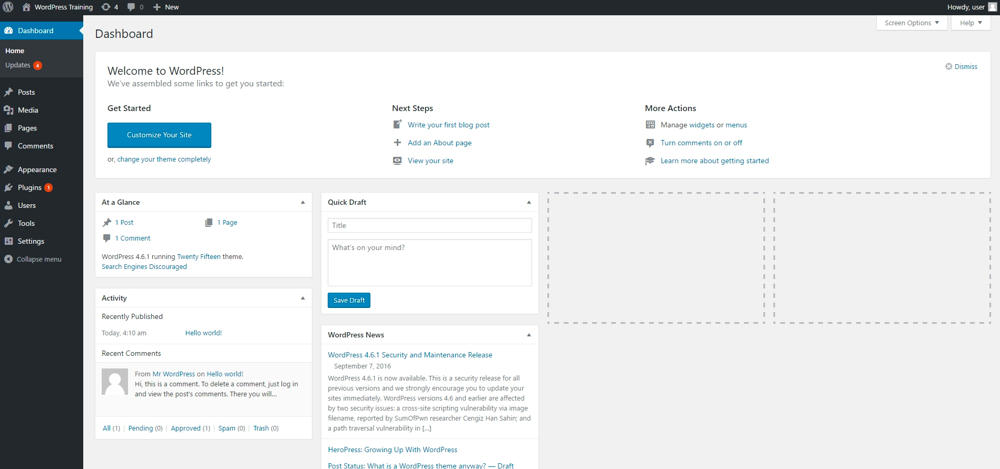
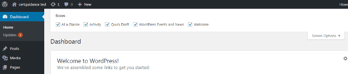
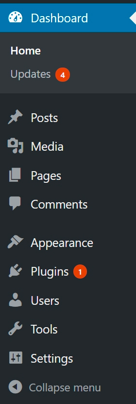

WordPress Dashboard
Get to Know the WordPress Admin Dashboard
The very first thing you'll see when you open the WordPress back end, or the admin panel, is the dashboard. This is the starting point for the majority of tasks you'll perform in WordPress.
To Get to the Dashboard
- Locate the WP Admin Panel with login URL: “localhost/wordpress/wp-admin.”
- Access the WordPress Dashboard
Your WordPress admin dashboard screen will look something like this:
At a Glance
This provides stats on your WordPress site content and the current version. You can view how many blog posts and comments you have on your site along with how much hourly traffic your site is receiving.
The Activity Panel
The Activity panel shows you which posts were recently published and which comments were recently added. From here, you also have options to un-approve, reply, or edit comments.
Quick Draft
The Quick Draft includes a mini post editor which provides facility to write & save a post from within the WordPress dashboard. It includes two fields, a title field for the draft and a test area to write some detail. It contains one single button to save the detail as a Draft.
WordPress Event & News
A column containing notifications from the WordPress team. This is a great resource to stay updated with community events like WordCamps or meetups with local WordPress users.
Screen Options Menu
The WordPress Screen Options Menu is a versatile and dynamic menu, and used to show or hide different widgets or section on the screen. It shows different options in different sections of WordPress. And it uses checkboxes to show or hide screen options that enables you to customize sections on the admin screen.
In the main dashboard section, the screen option is used to control (show/hide) different types of widgets that are shown on WordPress dashboard page. The default screen options of WordPress main dashboard is shown in below image:
Main Menu - Left Sidebar
The WordPress Dashboard comes with a default navigation menu shown in the left sidebar. This navigation menu is also the main menu of WordPress.
Dashboard
Yes it’s the first menu under the WordPress main menu. It contains two sub-menus "Home" & "Updates". The "Home" is for coming back to the main WordPress dashboard anytime from inside any menu. The "Updates" section is there to notify you about any new software updates released for WordPress Core, or Themes, or plugins.
Posts
This Menu has four sections. The first section “All Posts” takes you to a page where you will see all of the articles you have posted and also allows you to create new posts.
The second option “Add New” enables you to create a new post instantly
Rest two options categories & tags are there to manage categories and tags that you can use to categorize your blog posts into different subjects.
Media
The media section is dedicated to managing all the media uploads done by you. It has two sub menus “Library” and “Add New”. “Library” is the media library of WordPress, where all of your image & video uploads would be stored. The “Add New” option is there to provide you a mechanism to quickly upload new images or videos.
Pages
WordPress Pages are static pages that you can publish. The “Pages” menu allows you to view, edit, delete, manage, and publish new pages, such as Homepage, Contact Page etc. Unlike Posts, the pages can’t have any category or tag assigned to it.
Comments
If you allow comments on your site, you will be able to manage them in this section. You can approve, delete, or modify comments that come into your blog. In the “settings” area, you can enable/disable comments on your site.
Appearance
Here you can Install New Themes, Customize the look and feel of your current theme, place custom widgets to themes widget space, menus, Set background image, header image, and even you can edit source files of themes or widgets to tweak their behavior.
Plugins
Through this option, you can install new plugin either from WordPress.org’s plugins directory or can upload your own custom plugin. You can also fully manage those plugins, such as enabling, disabling, uninstalling, or can change plugin specific settings.
Plugins
Through this option, you can install new plugin either from WordPress.org’s plugins directory or can upload your own custom plugin. You can also fully manage those plugins, such as enabling, disabling, uninstalling, or can change plugin specific settings.